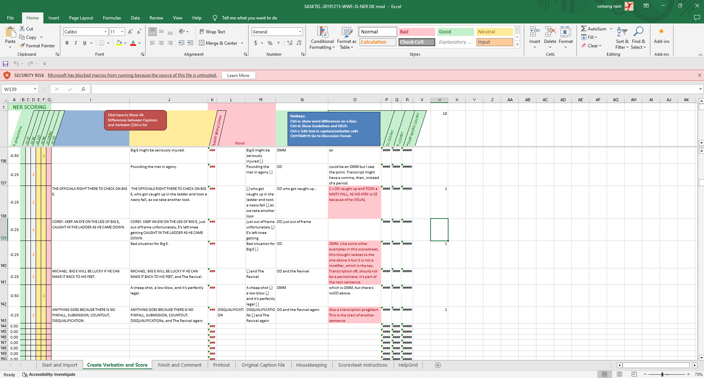
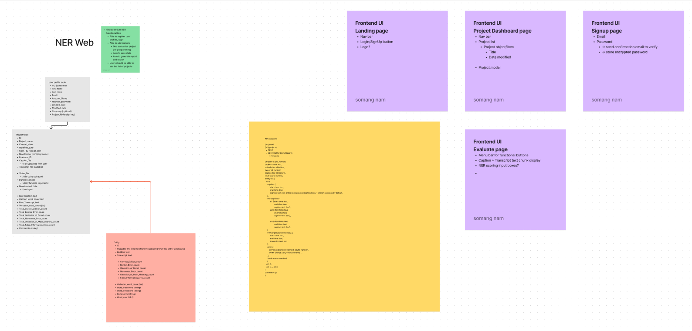
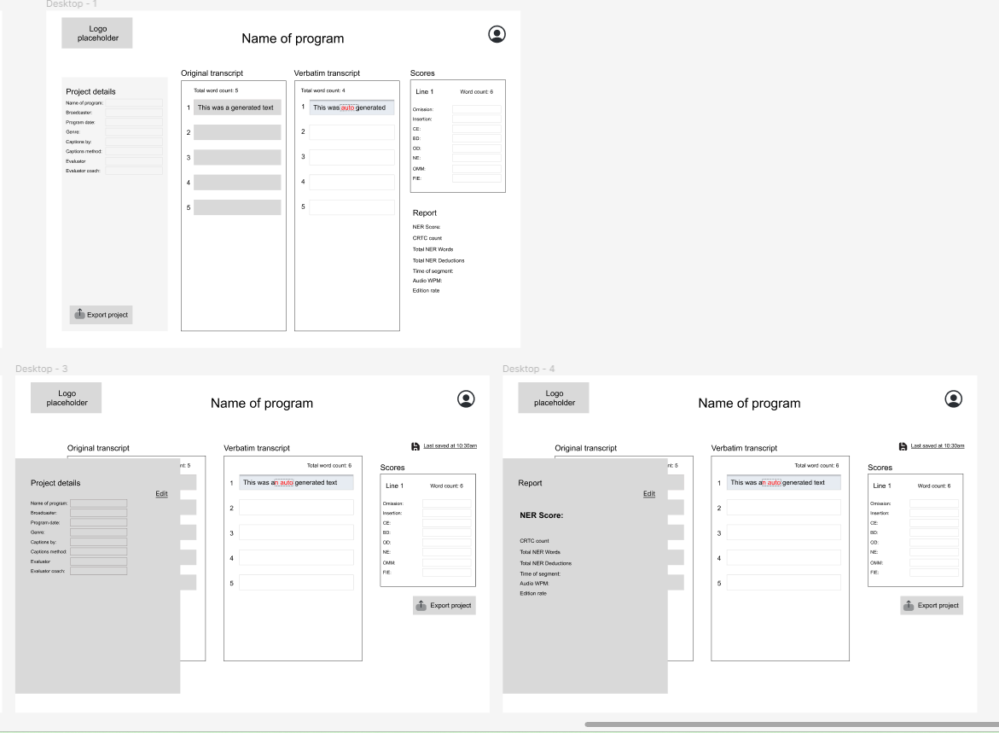
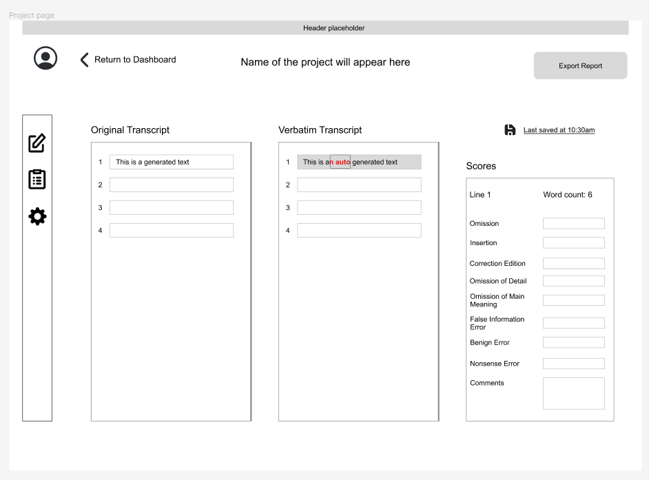
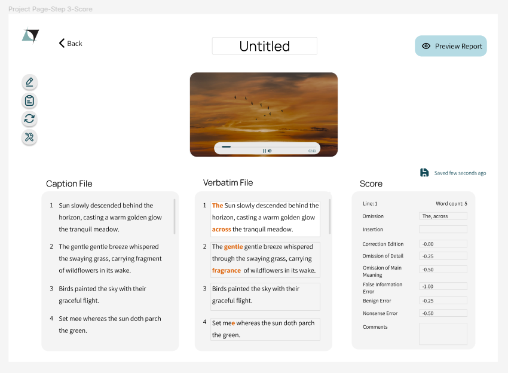
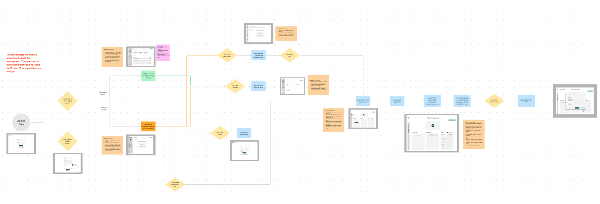
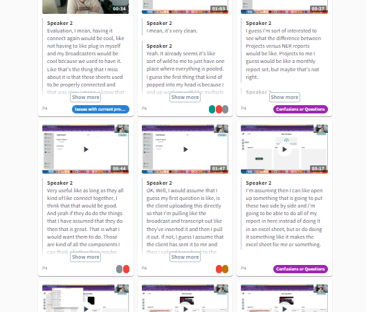
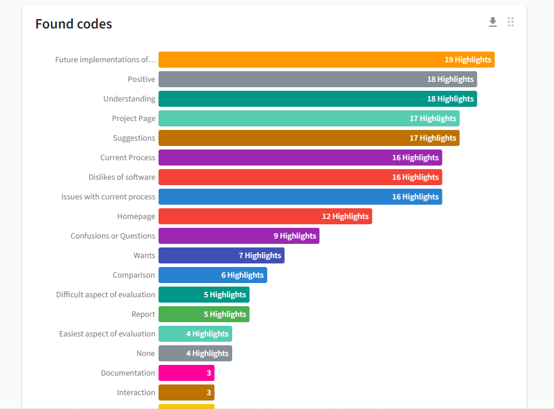
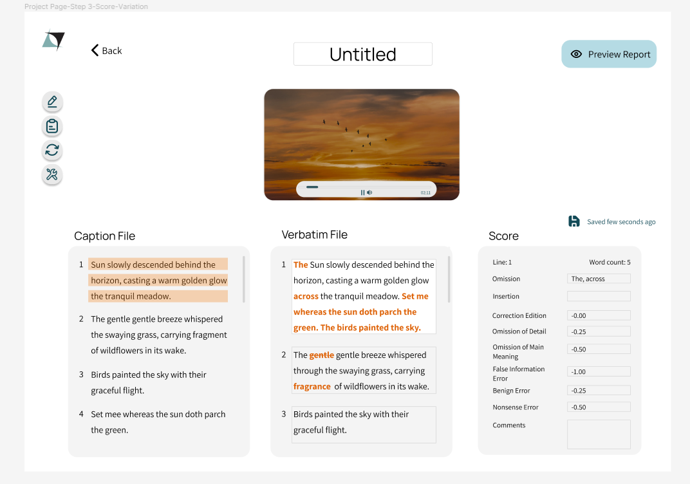
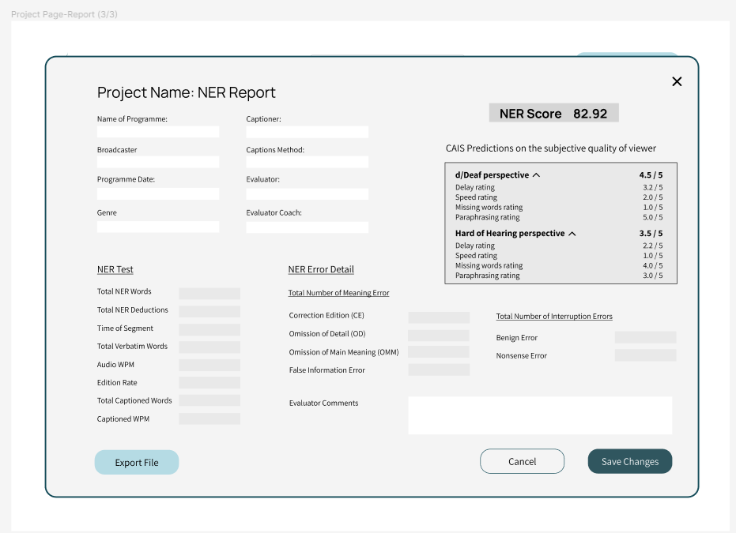

Designing a user interface for caption quality evaluation tool
The Canadian Radio-television and Telecommunications Commission (CRTC) regulates the quality of Closed Captioning (link), which is assessed using a specific model. Expert users faced significant barriers and inefficiencies due to the lack of dedicated software and interface for evaluating televised captions. To address this problem, a software tool was designed and developed from scratch using User-Centered Design principles.
This project involved two cycles of user research, including the System Usability Scale (SUS) and user studies, which informed the initial user interface design and an Alpha prototype. The tool enables certified evaluators to compare televised captions with transcripts, generating quality reports for broadcasters to audit caption quality.
Duration: 11 months
Product Manager / Lead Researcher
1. Requirement gathering
From the initial stage, two objectives were focused on to develop a dedicated user interface:
Task requirements
Need, Want, and Wish lists (Desired workflow)
Starting from the baseline knowledge, the fact that the Canadian NER model process was studied to learn the required tasks. Two domain experts were interviewed and generated a list of pain points from the current tools and processes. In addition, it was possible to acquire the existing tool that users were using. With these, an initial requirements list was created.

Figure 1. Old interface using VBA. It does not have intuitive controls and cluttered elements as the software is not dedicated to the task.

Figure 2. User requirements made in FigJam. Note that the diagram is not in the traditional format as it was to communicate with the software developers.
2. Prototyping with baseline knowledge and expert interviews
Initially, the Canadian NER model quality assessment procedure was studied to see how error severity was determined and how each error type was defined. The certified NER evaluators were recruited from NER Canada. The requirement lists and benchmarking of some other existing tools for other purposes were taken as design references. This allowed us to go through the initial low-fidelity prototype and potential user journey.

Figure 3. Low fidelity wireframe v1

Figure 4. Low fidelity wireframe v2
High fidelity prototype
The team evaluated the sketches, and the initial proof of concept level of software was implemented to be tested with the expert users. Then, the first high-fidelity prototype was created.

Figure 5. High fidelity prototype
To communicate with the stakeholders, a user journey of the desired system was also presented.

Figure 6. User journey
3. First user study
The first user study was planned to test the interface and system's usability and to delve deeper into the experts' workflow and desires. Therefore, the study was designed in the following order:
Demographic questionnaire
System Usability Scale on the current interface
User tasks (think aloud protocol) with semi-structured interview questions
User tasks were split into three high-level topics: 1) Sign up & sign in, 2) Create a project, and 3) Perform the evaluation using the system. At each page transition, participants were asked to describe their expected system behaviour and what they would do with the presented interface.
The qualitative data was collected using video and audio and then analyzed using Condens.io for open coding Thematic analysis. A set of design recommendations was generated from the results.

Figure 7. Coded qualitative data

Figure 8. Codes found from interview data
4. Research Insights and second iteration
Design recommendations from the first study:
Interface should integrate a video player for users while providing concurrent controls and displays.
The video player should also have keyboard control, which has important accessibility implications.
Interface should provide a single pair-wise control for the caption and verbatim sections to move together.
Interface should provide functionalities for the idea unit edition.
Interface should be flexible and intuitive to indicate and control the editable entries against non-editable entries for idea unit definition.
Interface should provide users access to the official NER guidelines and decision tree.
These design recommendations were presented and discussed with the software development team. Each recommendation was implemented to update on the tool interface. Upon implementation, a second round of user study was performed with the same five expert users.
The second study was designed in the following order:
User tasks (think aloud protocol) with semi-structured interview questions
System Usability Scale on the NERWEB interface
The final version specifically asked about the user experience in seeing AI-generated quality assessment to be used as a decision support tool in quality assessment. The user reaction towards the AI system was positive, highlighted in their reaction to how it was presented at the end of their evaluation.
The SUS score comparison showed improved usability from the conventional interface to the new interface, which was already proven by participants' reactions in the interview. A non-parametric statistical analysis for within-group comparison (Wilcoxon Signed-rank test) was performed to compare the two sets of SUS scores.

Figure 9. NERWEB final interface

Figure 10. Final report screen with CAIS prediction scores